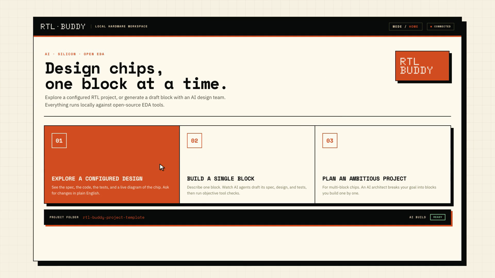
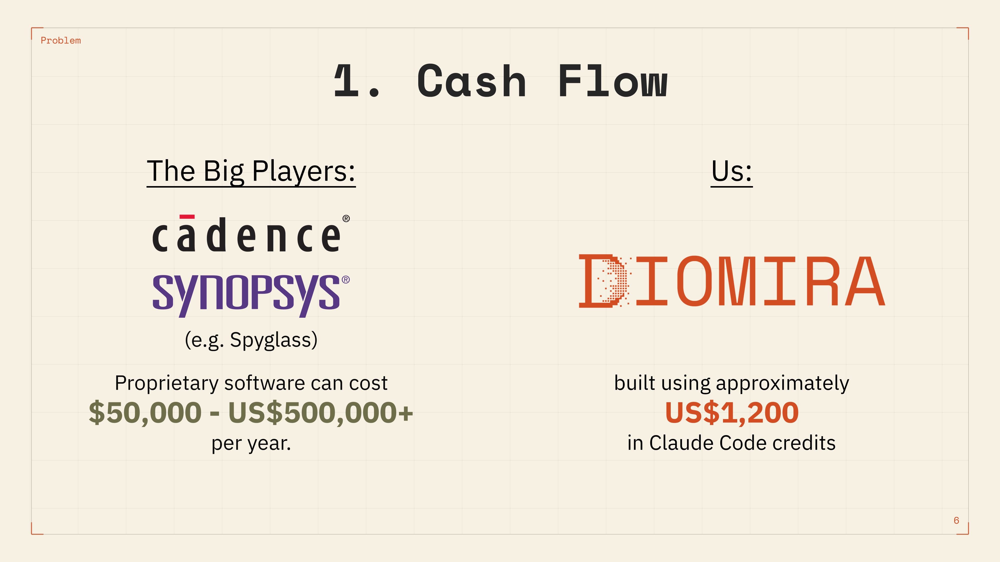
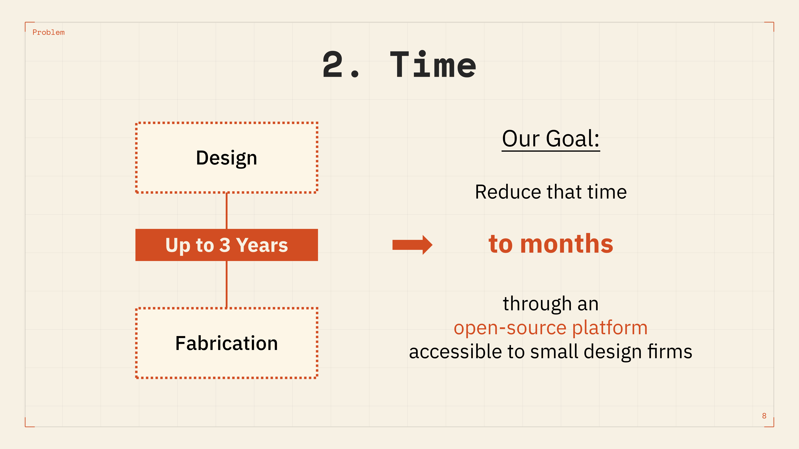
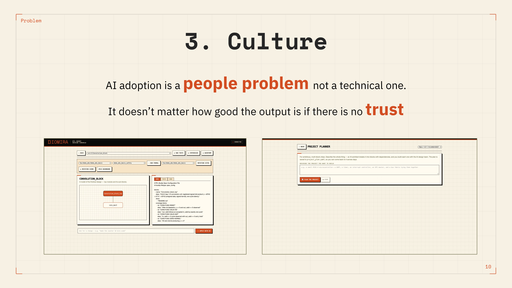
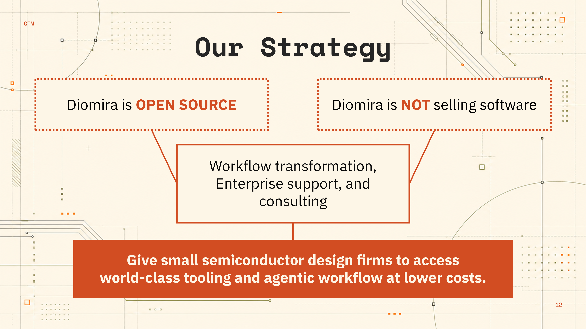
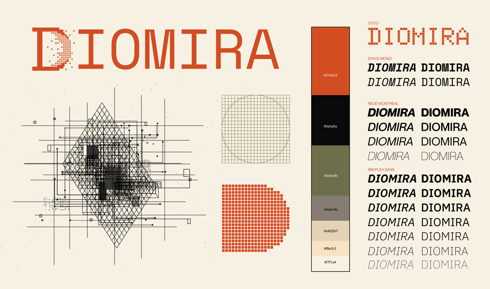
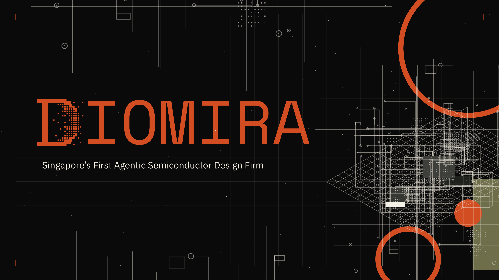
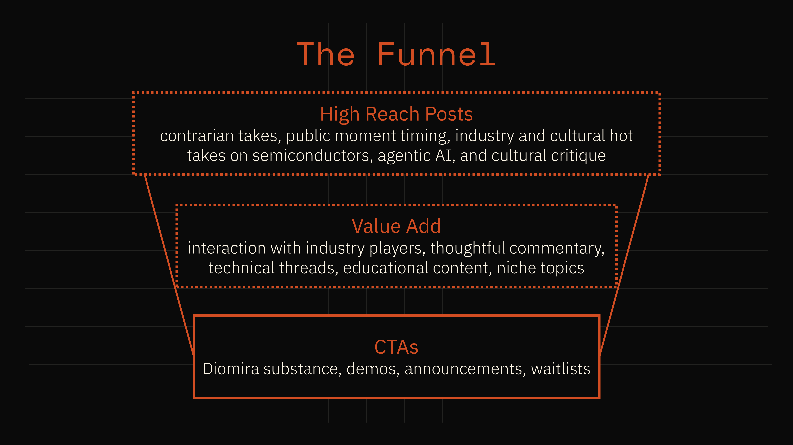

Building Early Brand Attention and Founder Voice for Diomira
Brand Strategy, Visual Identity & Content Experimentation


📊 At a Glance
1.19M organic views
47,421 likes
Brand narrative established
1 identity logo → deck → website
🗺️ Context
As an early-stage deep tech company, Diomira needed a clearer product story, a consistent visual identity and an affordable way to test public interest.
❌ Before
- Broad “AI for chip design” positioning
- No established visual identity
- Technical ideas were difficult to explain
- No tested content direction
✅ After
- Clearer product and market narrative
- Shared identity across logo, deck and website
- External-facing pitch materials
- Social media attention on founder account
🧭 Product Positioning & Pitch Narrative
⚡ Challenge:
Diomira’s product is complex and sit in a specialist industry. The story needed to explain what the company was building without relying on dense technical language.
Structured the pitch around three pressures faced by smaller design firms. Positioned Diomira as a system that coordinates specialised tools, giving the team a clearer way to explain the product and its open-source direction.
Developed the pitch deck and external-facing narrative to connect the technology with a recognisable business problem.




✅ Outcomes
- Clearer explanation of what Diomira was building
- Consistent product story
🎨 Visual Identity
⚡ Challenge:
Diomira needed to look technical and credible without resembling a traditional semiconductor company or becoming inaccessible to non-specialist audiences.
Designed the logo and established the visual direction across the pitch deck and website. Used consistent typography, colour and simple technical motifs to create a recognisable identity and make complex information easier to follow.


✅ Outcomes
- Defined visual identity for the company
- Consistent presentation across the logo, deck, website and social content
- Flexible foundation for future marketing materials
📣 Content Experiment on X
⚡ Challenge:
Diomira had a limited marketing budget and public proof at an early stage. We needed a fast way to attract attention before investing in a larger content programme.
Selected X as the first testing channel because semiconductor, AI and startup conversations were already concentrated there. Over three days, published 60 posts covering industry commentary, technical culture and Diomira-related themes on the founder account.
| Result | Views | Likes |
|---|---|---|
| Breakout post 1 | 922K | 37.23K |
| Breakout post 2 | 236K | 10.62K |
| Total (including all posts) | 1,194,597 | 47,421 |
The strongest posts were timely, clearly argued and connected to conversations already happening on the platform.

✅ Outcomes
- 1.19M organic views and 47,421 likes in three days
- Early evidence on which topics, tones and timings attracted attention
- A clearer direction for balancing broad commentary with technical and product content
💥 Impact
A clearer deep-tech story The product, market problem and open-source direction were brought into one more accessible narrative.
A consistent public identity The logo, pitch deck, website and social content shared a common visual and editorial direction.
Strong early attention The three-day experiment generated 1.19M views and provided useful signals for future content testing.
👉 What’s Next
- Product-led content—publish clearer product explanations, demos and technical updates
- Better measurement—track profile visits, qualified followers, link clicks and inbound interest
- Proof over claims—add benchmarks and case studies when approved product data becomes available